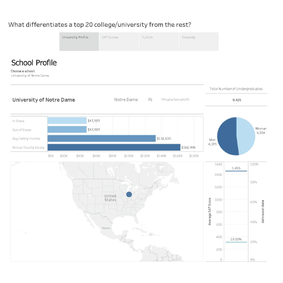
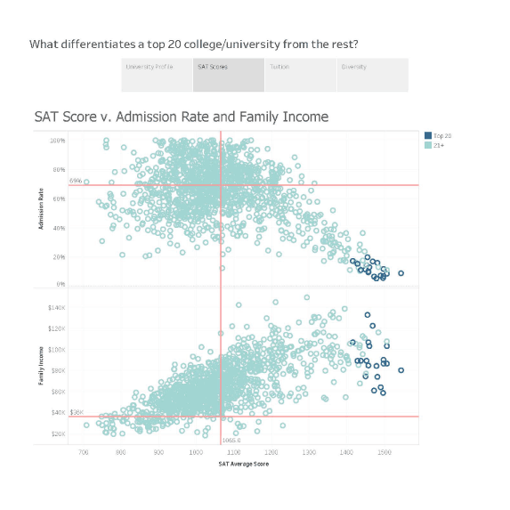
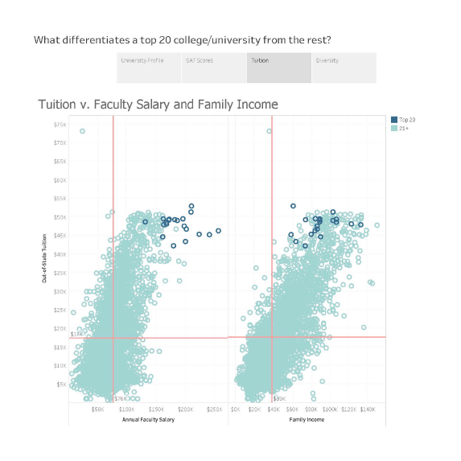
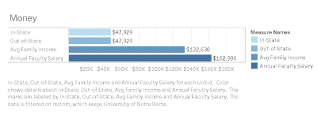
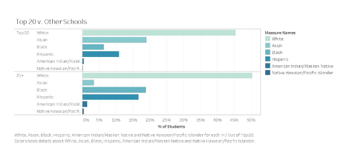

The Project
This project was for a data visualization class in which we were given the opportunity to choose our own dataset to compile a set of charts to tell some story. My group chose a college scorecard dataset to breakdown key information about different colleges and universities in the US. We used Tableau to create a storyboard which was compiled with various interactive dashboards in which you could select one school or multiple schools to look at depending on the graphic. The key factors we looked at were the main profile, SAT scores, tuition, and diversity. The following images will show some of the main graphs used in the Tableau storyboard.
The Process
01
Student Body Gender Breakdown
02
SAT Scores and Admission Rates

03
Tuition, Family Income, and Faculty Salaries
04
Do Admission Rates and Family Income Affect SAT Scores?

05
Ethnicity Breakdown at Top 20 vs. Other Universities
06
Diversity at the Top 20 Universities